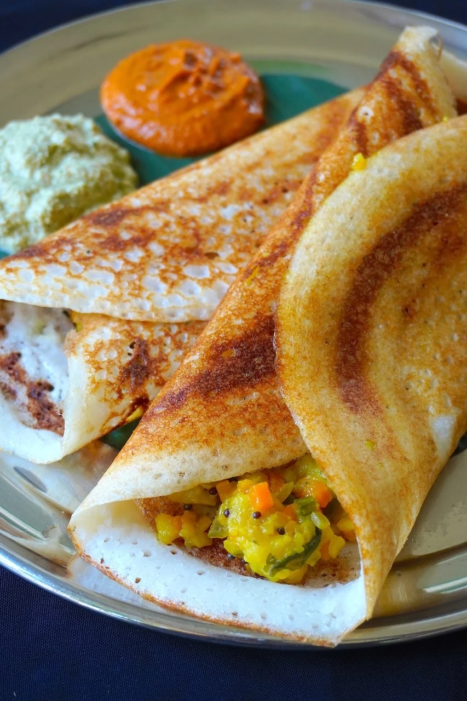

Masala Dosa

Description
Masala Dosa is a traditional South Indian dish.
It is a crispy fermented rice and lentil crepe
filled with spiced potato masala.
Ingredients
- Dosa batter
- 3 potatoes
- 1 onion
- Green chillies
- Mustard seeds
- Curry leaves
- Turmeric powder
- Oil and salt
Steps
- Boil and mash the potatoes.
- Heat oil in a pan.
- Add mustard seeds, curry leaves and onions.
- Add potatoes, turmeric and salt.
- Prepare the dosa on a hot pan.
- Place potato masala inside the dosa.
- Fold and serve with chutney.
Home